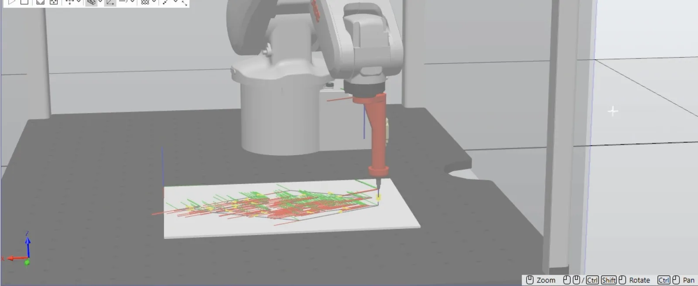

ABB IRB 120 drawing cell
Offline programming of industrial robots in ABB RobotStudio. Three workshops on an IRB 1600, then a cell of my own: an IRB 120 that draws a logo on an A3 sheet, checked in simulation before handing in the station.
The problem
A robot doesn't know where the sheet is. The brief was to rebuild the lab cell (an IRB 120 on an IRC5 Compact controller, a pen tool, an A3 sheet) and make the robot draw on it.
So everything has to be told to the millimetre: where the sheet is (the work object), where the tip of the pen is (the TCP), and which path to follow. Then everything that could go wrong has to be checked in simulation.

What I did
The basics, in three workshops
The first workshops are on an IRB 1600: building a station, defining a work object from three points on the part, placing targets, choosing between MoveJ, MoveL and MoveC, tuning the zones and adding a Home position. Then creating a tool from its geometry so the robot knows exactly where the TCP is, and generating a path along a curve with AutoPath.
A working pick and place
The third workshop is to model a two-finger gripper as a mechanism, then animate it with a Smart Component (open and closed poses, attach and detach the part) driven by I/O signals wired to the controller in Station Logic. The RAPID program sets the signals at the right time and the gripper picks the part up and puts it down.
The school's virtual machine was down on that day, so I did the session on my own the same evening, until the simulation ran.
My own cell: a robot that draws
Instead of a circle or a triangle, I went for the full outline of a logo in a single stroke: 217 targets, for a drawing of about 278 x 148 mm.
- CADLogo remodelled as a solid in Fusion, exported to SAT.
- PlacementPositioned in the Paper_2026 frame, at the centre of the A3.
- AutoPathBorder of the top face, 0.5 mm minimum distance, approach and depart at 50 mm.
- OrientationAll targets aligned on one reference, so the wrist no longer spins at every corner.
- RAPIDHome, approach, MoveL through the 217 targets, depart, Home. No configuration left unresolved.

The problems I hit
A mesh has no edges to follow
The original logo file was an STL mesh, in which RobotStudio finds no faces or edges to follow for AutoPath. This is why I remodelled it as a proper solid in Fusion. Then, at 3 mm spacing the details disappeared, while at 0.5 mm the path follows the shape.
What the simulation caught
My first work object ended up under the sheet, because I had clicked the bottom edge instead of the top one. Then the pen stopped half a millimetre above the paper, and my correction made it worse: the Z axis of the targets points down, so a -0.5 mm offset in the Local frame raised them.
Redone in the World frame, the targets are checked one by one against the height of the sheet. All of it was found on screen, and not with a pen crashing into the table.
Results
- 217
- targets on the drawing path
- 0.5 mm
- AutoPath minimum distance
- 278 x 148
- drawing size on the A3, in mm
- v100, z1
- drawing speed and zone
What I learned
- Offline programming is there to find the errors on screen. A misplaced work object or an offset in the wrong direction costs nothing in simulation.
- Always check in which frame an offset is applied (Local or World), and in which direction the Z axis of the targets points.
- AutoPath needs real CAD geometry (faces and edges). An STL mesh has to be remodelled first.
The tech, in plain words
- Offline programming
- Writing and testing the robot program on a computer, without tying up the real robot. The virtual controller runs the same software as the real one.
- Work object
- The coordinate frame of the part. Here, the corner of the sheet: recalibrate it on the real sheet and the whole drawing follows.
- TCP
- Tool Center Point: the tip of the tool, here the tip of the pen. It is the point the robot brings onto each target.
- Configuration
- A robot can often reach the same point with its joints in different poses. Choosing one and keeping it avoids sudden flips in the middle of a path.
- Zone (z1, fine)
- How closely the robot passes through a point: fine stops exactly on it, z1 rounds the corner within 1 mm to keep the motion smooth.
- RAPID
- The programming language of ABB controllers: the moves, the signals, the logic of the cycle.